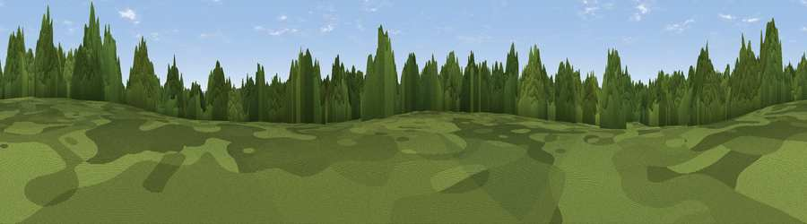

High Standing Hill
#43726 in England · top 62% of its area beats it · near CranbourneThe view, rendered

A 360° render of this exact spot computed from the terrain model, tree cover and land cover — summer colours, afternoon light, calibrated against photographs of famous viewpoints. Real trees, hedges and buildings will differ in detail.
The panorama
Grey silhouette: terrain skyline in each direction (720 bearings, Earth curvature and refraction included). Dashed green: skyline with trees (+15 m) and buildings (+8 m) as obstacles. Blue strip: how far the ground is visible on each bearing.
Where the view opens
Wedge length = distance to the farthest visible ground on that bearing (vegetation-aware). Rings at 10, 25 and 50 km.
What fills the view
72% woodland · 19% grassland · 5% cropland · 4% built-up
Angular shares of the visible panorama (visual magnitude), not map area. Landscape diversity 0.38 (0–1 Shannon).
Key numbers
More beautiful places nearby
The staircase of upgrades: each row has a higher view potential than everything closer. Driving times are estimates from straight-line distance, calibrated against real road routing — check an actual route before setting out.
| Place | Direction | Drive | Score |
|---|---|---|---|
| Viewpoint near Oakley Green | NNE · 1 km | ~4 min | 41.1 |
| Viewpoint near The Village | E · 1 km | ~4 min | 41.7 |
| Windsor Castle | NE · 5 km | ~10 min | 53.3 |
| Viewpoint near Bishopsgate | ESE · 6 km | ~12 min | 53.6 |
| Fultness Wood Hill | NW · 13 km | ~24 min | 57.8 |
| Viewpoint near Compton | S · 26 km | ~41 min | 66.7 |
| Viewpoint near Watlington | NW · 30 km | ~47 min | 67.1 |
| Viewpoint near Cookley Green | NW · 30 km | ~47 min | 68.5 |
51.45720, -0.65626 · source: osm peak · position refined by local search. Computed location — check access rights before visiting.